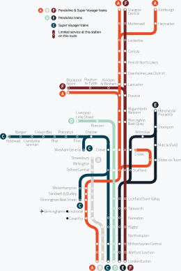
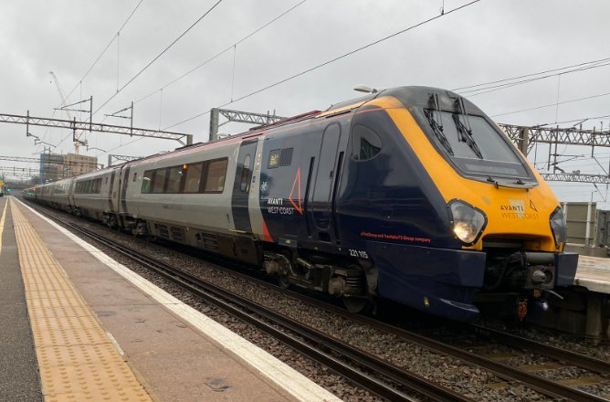

History
Avanti West Coast is a British train operating company owned by FirstGroup (70%) and Trenitalia (30%) that operates the West Coast Partnership. The company took over Virgin Trains, which had run WCP since 1997. WCP was scheduled to run until March 2030 and was supposed to operate the initial HS2 services after 2026 (though HS2 was later delayed). Then, due to the abolition of the franchise system, Trenitalia and the DfT planned to terminate the WCP franchise in March 2026.
Purpose
Avanti West Coast aims to provide reliable, long-distance passenger services between London, the West Midlands, North West England, North Wales and even Scotland, via the West Coast Main Line. In addition, Avanti West Coast connect some of the largest cities in Britain, such as: London, Birmingham, Liverpool, Manchester, Glasgow and Edinburgh.
Route map
Rolling Stock
Current Stock
Class: 221 Super Voyager
Type: DEMU
Top speed: 125mph (200km/h)
Number: 8 (5 carriages)
Built: 8 built 2001-2002